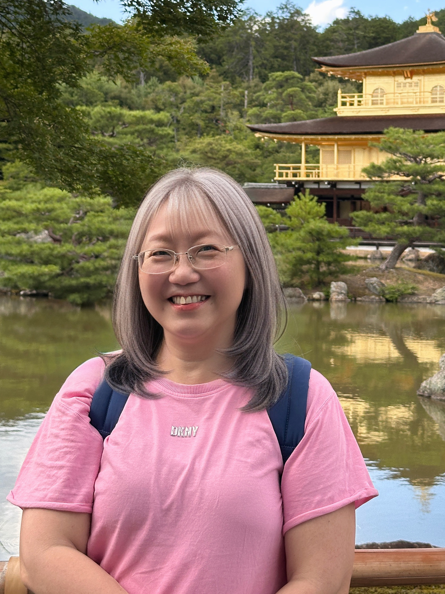
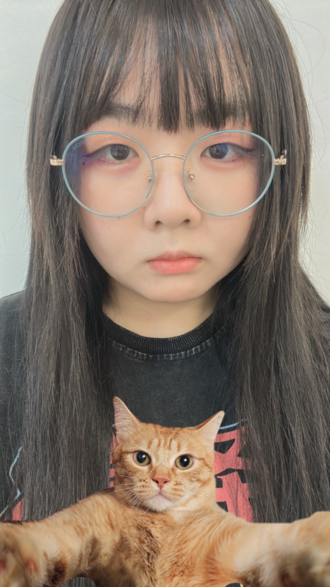

駱育萱 教授
駱育萱
中文閱讀與表達課程 / 南臺科技大學通識教育中心
教師簡介
駱育萱教授專精於現當代文學研究、生命敘事與創意寫作教學,長期致力於推動生命書寫教育。她相信,每個人的生命經驗都是獨特而珍貴的文本,透過書寫,我們得以整理記憶、理解自我、連結他人。在教學現場,駱老師不僅傳授寫作技巧,更重視引導學生探索內在世界,培養同理心與人文素養。她的課堂氛圍溫暖而開放,鼓勵每位學生勇敢說出自己的故事,在書寫中找到生命的意義與力量。
聯絡資訊
電子郵件
yib@stust.edu.tw
研究室
T1250-2
分機
5678
學術背景與經歷
- 國立中山大學中文博士
- 現任 南臺科技大學通識教育中心 副教授
專長領域
生命書寫
口語表達與敘事技巧
古典小說
女性彈詞
跨領域教學
教學助理
陪伴與支持學生的學習旅程

劉時澈
南台科技大學 創新產品設計
專長領域和興趣
平面設計
具斯
吉他
琵琶
素描
唱歌
張愉祥
南台科技大學 資訊管理系
專長領域
網頁開發和程式設計
使用AI輔助學習
數據視覺化
越南語中高級
團隊理念
我們相信,每個人的生命都是一部值得書寫的作品。透過「生命書寫」課程,我們不僅教授寫作技巧,更重要的是引導同學們學會聆聽內心的聲音、梳理生命的經驗、建構自我的認同。
在這個快節奏的時代,我們希望提供一個安靜而溫暖的空間,讓學生能夠停下來,回顧過往、觀照當下、展望未來。文字不僅是表達的工具,更是理解自我、連結他人的媒介。
「書寫、是為了記得;分享,是為了理解;傾聽,是為了同行。」